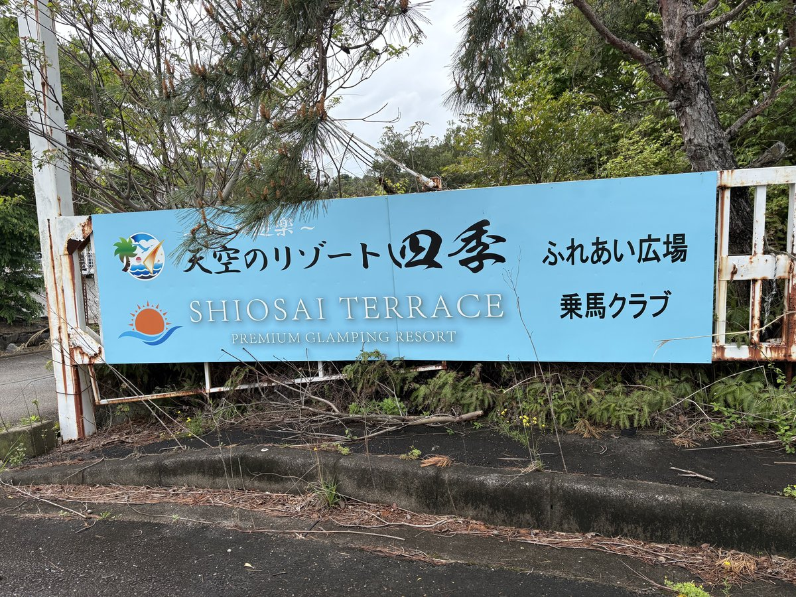

四季の郷 遊楽 〜天空のリゾート 四季〜
和歌山県西牟婁郡白浜町堅田2399-3
駐車場
あり（無料）
トイレ
あり（洋式）
ドッグラン
あり（有料） / 各ドッグコテージに専用のプライベートドッグラン付き（他の犬と顔を合わせずに遊べる）
入場料
有料（ペット追加料金: 公式のドッグルームは1頭無料・2頭目以降1頭1,000円。宿泊料金はプラン・時期により変動するため公式サイトまたは予約サイトで確認のこと）
備考・犬連れでのポイント
白浜の高台に佇む犬連れ専用リゾート。ドッグコテージ12棟+スタンダードコテージ9棟（全21室）。
各ドッグコテージに専用プライベートドッグラン付きで他の犬と顔を合わせずに遊べる。
アドベンチャーワールドから車5分・徒歩15分の好立地。温泉・露天風呂・サウナ、BBQ、カフェ完備。
チェックイン時に狂犬病予防接種証明書+混合ワクチン接種証明書の提示必須。
サイズ制限の明記はなく大型犬も受入可。ペット追加料金は公式のドッグルームで1頭無料・2頭目以降1頭1,000円だが、予約サイト・プランにより異なるため予約時に確認のこと。
チェックイン15:00/アウト10:00。日帰りドッグラン利用は不可（宿泊者のみ利用可能）。